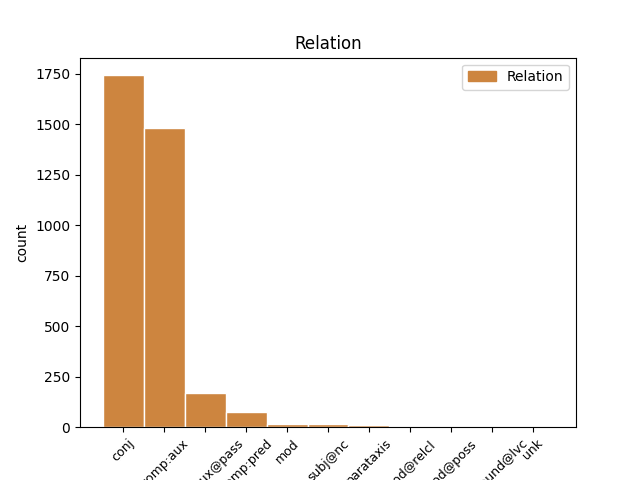
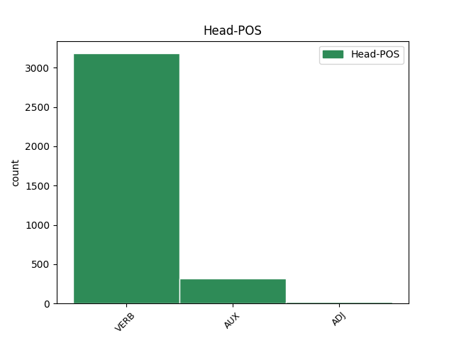
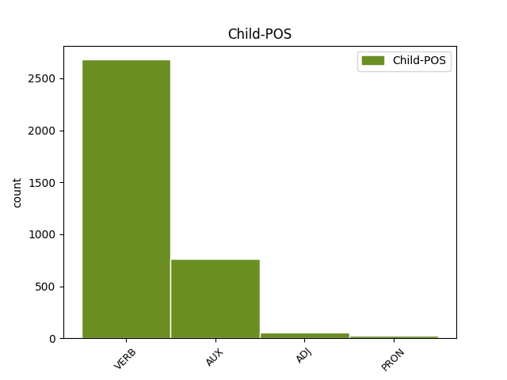

Distribution of features within this leaf



Agreement Rules sorted by frequency.
- When the dependent token is the conjunct(conj) of the head token, and the head token is VERB
1 وی _ _ _ _ 0 _ _ _
2 افزود _ _ _ _ 0 _ _ _
3 : _ _ _ _ 0 _ _ _
4 الگوی _ _ _ _ 0 _ _ _
5 غذایی _ _ _ _ 0 _ _ _
6 نامناسب _ _ _ _ 0 _ _ _
7 مردم _ _ _ _ 0 _ _ _
8 باید _ _ _ _ 0 _ _ _
9 مورد _ _ _ _ 0 _ _ _
10 بازنگری _ _ _ _ 0 _ _ _
11 اساسی _ _ _ _ 0 _ _ _
12 قرار _ _ _ _ 0 _ _ _
13 گرفته گرفت#گیر VERB V_PP Number=Sing|Person=3|VerbForm=Part 0 _ _ _
14 و _ _ _ _ 0 _ _ _
15 سبزیجات _ _ _ _ 0 _ _ _
16 تازه _ _ _ _ 0 _ _ _
17 ، _ _ _ _ 0 _ _ _
18 میوه _ _ _ _ 0 _ _ _
19 و _ _ _ _ 0 _ _ _
20 لبنیات _ _ _ _ 0 _ _ _
21 جایگزین _ _ _ _ 0 _ _ _
22 استفاده _ _ _ _ 0 _ _ _
23 از _ _ _ _ 0 _ _ _
24 انواع _ _ _ _ 0 _ _ _
25 چربیها _ _ _ _ 0 _ _ _
26 شود کرد#کن AUX V_SUB Mood=Sub|Number=Sing|Person=3|Tense=Pres 13 conj _ SpaceAfter=No
27 . _ _ _ _ 0 _ _ _
1 گزارش _ _ _ _ 0 _ _ _
2 دفتر _ _ _ _ 0 _ _ _
3 همآهنگکننده _ _ _ _ 0 _ _ _
4 امور _ _ _ _ 0 _ _ _
5 بشردوستانه _ _ _ _ 0 _ _ _
6 سازمان _ _ _ _ 0 _ _ _
7 ملل _ _ _ _ 0 _ _ _
8 میگوید _ _ _ _ 0 _ _ _
9 : _ _ _ _ 0 _ _ _
10 در _ _ _ _ 0 _ _ _
11 زمینه _ _ _ _ 0 _ _ _
12 کمکهای _ _ _ _ 0 _ _ _
13 بینالمللی _ _ _ _ 0 _ _ _
14 نیز _ _ _ _ 0 _ _ _
15 دولت _ _ _ _ 0 _ _ _
16 ایران _ _ _ _ 0 _ _ _
17 به _ _ _ _ 0 _ _ _
18 دفتر _ _ _ _ 0 _ _ _
19 سازمان _ _ _ _ 0 _ _ _
20 ملل _ _ _ _ 0 _ _ _
21 در _ _ _ _ 0 _ _ _
22 تهران _ _ _ _ 0 _ _ _
23 اطلاع _ _ _ _ 0 _ _ _
24 داده داد#ده VERB V_PP Number=Sing|Person=3|VerbForm=Part 25 comp:aux _ _
25 است است VERB V_PRS Number=Sing|Person=3|Tense=Pres 0 _ _ _
26 که _ _ _ _ 0 _ _ _
27 امکان _ _ _ _ 0 _ _ _
28 پذیرش _ _ _ _ 0 _ _ _
29 این _ _ _ _ 0 _ _ _
30 گونه _ _ _ _ 0 _ _ _
31 کمکها _ _ _ _ 0 _ _ _
32 جهت _ _ _ _ 0 _ _ _
33 حمایت _ _ _ _ 0 _ _ _
34 از _ _ _ _ 0 _ _ _
35 تلاشهای _ _ _ _ 0 _ _ _
36 امدادی _ _ _ _ 0 _ _ _
37 مراجع _ _ _ _ 0 _ _ _
38 ذیربط _ _ _ _ 0 _ _ _
39 داخلی _ _ _ _ 0 _ _ _
40 وجود _ _ _ _ 0 _ _ _
41 دارد _ _ _ _ 0 _ _ _
42 . _ _ _ _ 0 _ _ _
1 دبیرکل _ _ _ _ 0 _ _ _
2 آژانس _ _ _ _ 0 _ _ _
3 بینالمللی _ _ _ _ 0 _ _ _
4 انرژی _ _ _ _ 0 _ _ _
5 اتمی _ _ _ _ 0 _ _ _
6 نیز _ _ _ _ 0 _ _ _
7 گفت _ _ _ _ 0 _ _ _
8 : _ _ _ _ 0 _ _ _
9 با _ _ _ _ 0 _ _ _
10 توجه _ _ _ _ 0 _ _ _
11 به _ _ _ _ 0 _ _ _
12 سیاست _ _ _ _ 0 _ _ _
13 شفاف _ _ _ _ 0 _ _ _
14 ایران _ _ _ _ 0 _ _ _
15 در _ _ _ _ 0 _ _ _
16 ارتباط _ _ _ _ 0 _ _ _
17 با _ _ _ _ 0 _ _ _
18 مسایل _ _ _ _ 0 _ _ _
19 هستهای _ _ _ _ 0 _ _ _
20 ، _ _ _ _ 0 _ _ _
21 آژانس _ _ _ _ 0 _ _ _
22 و _ _ _ _ 0 _ _ _
23 ایران _ _ _ _ 0 _ _ _
24 همکاریهای _ _ _ _ 0 _ _ _
25 بسیار _ _ _ _ 0 _ _ _
26 خوبی _ _ _ _ 0 _ _ _
27 با _ _ _ _ 0 _ _ _
28 هم _ _ _ _ 0 _ _ _
29 خواهند خواست#خواه AUX V_AUX Number=Plur|Person=3|Tense=Fut|VerbForm=Fin 0 _ _ _
30 داشت داشت#دار VERB V_PA Number=Sing|Person=3|Tense=Past 29 comp:aux _ SpaceAfter=No
31 . _ _ _ _ 0 _ _ _
1 آقازاده _ _ _ _ 0 _ _ _
2 اضافه _ _ _ _ 0 _ _ _
3 کرد _ _ _ _ 0 _ _ _
4 : _ _ _ _ 0 _ _ _
5 سازمان _ _ _ _ 0 _ _ _
6 انرژی _ _ _ _ 0 _ _ _
7 اتمی _ _ _ _ 0 _ _ _
8 ایران _ _ _ _ 0 _ _ _
9 درخواست _ _ _ _ 0 _ _ _
10 میکند _ _ _ _ 0 _ _ _
11 که _ _ _ _ 0 _ _ _
12 مرکز _ _ _ _ 0 _ _ _
13 کرج _ _ _ _ 0 _ _ _
14 به _ _ _ _ 0 _ _ _
15 عنوان _ _ _ _ 0 _ _ _
16 یکی _ _ _ _ 0 _ _ _
17 از _ _ _ _ 0 _ _ _
18 مراکز _ _ _ _ 0 _ _ _
19 کمکهای _ _ _ _ 0 _ _ _
20 فنی _ _ _ _ 0 _ _ _
21 آژانس _ _ _ _ 0 _ _ _
22 در _ _ _ _ 0 _ _ _
23 زمینه _ _ _ _ 0 _ _ _
24 کشاورزی _ _ _ _ 0 _ _ _
25 و _ _ _ _ 0 _ _ _
26 پزشکی _ _ _ _ 0 _ _ _
27 منطقه _ _ _ _ 0 _ _ _
28 شناخته شناخت#شناس VERB V_PP Number=Sing|Person=3|VerbForm=Part 29 comp:aux@pass _ _
29 شود کرد#کن VERB V_SUB Mood=Sub|Number=Sing|Person=3|Tense=Pres 0 _ _ _
30 . _ _ _ _ 0 _ _ _
1 این _ _ _ _ 0 _ _ _
2 گزارش _ _ _ _ 0 _ _ _
3 میگوید _ _ _ _ 0 _ _ _
4 : _ _ _ _ 0 _ _ _
5 وزارت _ _ _ _ 0 _ _ _
6 کشور _ _ _ _ 0 _ _ _
7 ایران _ _ _ _ 0 _ _ _
8 اعلام _ _ _ _ 0 _ _ _
9 کرده _ _ _ _ 0 _ _ _
10 است _ _ _ _ 0 _ _ _
11 ، _ _ _ _ 0 _ _ _
12 که _ _ _ _ 0 _ _ _
13 مبلغی _ _ _ _ 0 _ _ _
14 معادل _ _ _ _ 0 _ _ _
15 ۲۰۰ _ _ _ _ 0 _ _ _
16 میلیون _ _ _ _ 0 _ _ _
17 دلار _ _ _ _ 0 _ _ _
18 کمک _ _ _ _ 0 _ _ _
19 فوری _ _ _ _ 0 _ _ _
20 مورد _ _ _ _ 0 _ _ _
21 نیاز _ _ _ _ 0 _ _ _
22 است _ _ _ _ 0 _ _ _
23 و _ _ _ _ 0 _ _ _
24 تا _ _ _ _ 0 _ _ _
25 کنون _ _ _ _ 0 _ _ _
26 نیز _ _ _ _ 0 _ _ _
27 دولت _ _ _ _ 0 _ _ _
28 ایران _ _ _ _ 0 _ _ _
29 یک _ _ _ _ 0 _ _ _
30 مجموعه _ _ _ _ 0 _ _ _
31 کمک _ _ _ _ 0 _ _ _
32 اضطراری _ _ _ _ 0 _ _ _
33 معادل _ _ _ _ 0 _ _ _
34 ۳۸۱ _ _ _ _ 0 _ _ _
35 میلیون _ _ _ _ 0 _ _ _
36 دلار _ _ _ _ 0 _ _ _
37 جهت _ _ _ _ 0 _ _ _
38 کمک _ _ _ _ 0 _ _ _
39 به _ _ _ _ 0 _ _ _
40 کشاورزان _ _ _ _ 0 _ _ _
41 خسارتدیده _ _ _ _ 0 _ _ _
42 از _ _ _ _ 0 _ _ _
43 خشکسالی _ _ _ _ 0 _ _ _
44 تصویب _ _ _ _ 0 _ _ _
45 نموده نمود#نما ADJ ADJ_INO Number=Sing|Person=3|VerbForm=Part 46 comp:pred _ _
46 است است AUX V_PRS Number=Sing|Person=3|Tense=Pres 0 _ _ _
47 . _ _ _ _ 0 _ _ _
1 جناب _ _ _ _ 0 _ _ _
2 آقای _ _ _ _ 0 _ _ _
3 نذیر _ _ _ _ 0 _ _ _
4 احمد _ _ _ _ 0 _ _ _
5 که _ _ _ _ 0 _ _ _
6 خود _ _ _ _ 0 _ _ _
7 از _ _ _ _ 0 _ _ _
8 سالیان _ _ _ _ 0 _ _ _
9 دور _ _ _ _ 0 _ _ _
10 با _ _ _ _ 0 _ _ _
11 تتبعات _ _ _ _ 0 _ _ _
12 و _ _ _ _ 0 _ _ _
13 تألیفات _ _ _ _ 0 _ _ _
14 استاد _ _ _ _ 0 _ _ _
15 گلچین _ _ _ _ 0 _ _ _
16 معانی _ _ _ _ 0 _ _ _
17 در _ _ _ _ 0 _ _ _
18 حوزهٔ _ _ _ _ 0 _ _ _
19 ادب _ _ _ _ 0 _ _ _
20 و _ _ _ _ 0 _ _ _
21 تاریخ _ _ _ _ 0 _ _ _
22 و _ _ _ _ 0 _ _ _
23 تذکره _ _ _ _ 0 _ _ _
24 و _ _ _ _ 0 _ _ _
25 تصحیح _ _ _ _ 0 _ _ _
26 آشنایی _ _ _ _ 0 _ _ _
27 کامل _ _ _ _ 0 _ _ _
28 داشتند _ _ _ _ 0 _ _ _
29 ، _ _ _ _ 0 _ _ _
30 هرچند _ _ _ _ 0 _ _ _
31 از _ _ _ _ 0 _ _ _
32 همان _ _ _ _ 0 _ _ _
33 آغاز _ _ _ _ 0 _ _ _
34 پذیرفتند _ _ _ _ 0 _ _ _
35 که _ _ _ _ 0 _ _ _
36 این _ _ _ _ 0 _ _ _
37 معرفی _ _ _ _ 0 _ _ _
38 را _ _ _ _ 0 _ _ _
39 به _ _ _ _ 0 _ _ _
40 عهده _ _ _ _ 0 _ _ _
41 گیرند _ _ _ _ 0 _ _ _
42 ، _ _ _ _ 0 _ _ _
43 لکن _ _ _ _ 0 _ _ _
44 عوایق _ _ _ _ 0 _ _ _
45 ناخواسته _ _ _ _ 0 _ _ _
46 و _ _ _ _ 0 _ _ _
47 مشغلههای _ _ _ _ 0 _ _ _
48 فراوان _ _ _ _ 0 _ _ _
49 ایشان _ _ _ _ 0 _ _ _
50 مانع _ _ _ _ 0 _ _ _
51 از _ _ _ _ 0 _ _ _
52 انجام _ _ _ _ 0 _ _ _
53 این _ _ _ _ 0 _ _ _
54 کار _ _ _ _ 0 _ _ _
55 میشد _ _ _ _ 0 _ _ _
56 ، _ _ _ _ 0 _ _ _
57 تا _ _ _ _ 0 _ _ _
58 سرانجام _ _ _ _ 0 _ _ _
59 بر _ _ _ _ 0 _ _ _
60 اثر _ _ _ _ 0 _ _ _
61 تأکید _ _ _ _ 0 _ _ _
62 و _ _ _ _ 0 _ _ _
63 درخواستهای _ _ _ _ 0 _ _ _
64 مکرر _ _ _ _ 0 _ _ _
65 اینجانب _ _ _ _ 0 _ _ _
66 ، _ _ _ _ 0 _ _ _
67 پروفسور _ _ _ _ 0 _ _ _
68 نذیر _ _ _ _ 0 _ _ _
69 احمد _ _ _ _ 0 _ _ _
70 با _ _ _ _ 0 _ _ _
71 اختصاص _ _ _ _ 0 _ _ _
72 دادن _ _ _ _ 0 _ _ _
73 زمانی _ _ _ _ 0 _ _ _
74 برای _ _ _ _ 0 _ _ _
75 این _ _ _ _ 0 _ _ _
76 امر _ _ _ _ 0 _ _ _
77 مهم _ _ _ _ 0 _ _ _
78 ، _ _ _ _ 0 _ _ _
79 مقالهای _ _ _ _ 0 _ _ _
80 به _ _ _ _ 0 _ _ _
81 زبان _ _ _ _ 0 _ _ _
82 اردو _ _ _ _ 0 _ _ _
83 ، _ _ _ _ 0 _ _ _
84 دربارهٔٔ _ _ _ _ 0 _ _ _
85 بررسی _ _ _ _ 0 _ _ _
86 آثار _ _ _ _ 0 _ _ _
87 و _ _ _ _ 0 _ _ _
88 شناساندن _ _ _ _ 0 _ _ _
89 بیشتر _ _ _ _ 0 _ _ _
90 استاد _ _ _ _ 0 _ _ _
91 گلچین _ _ _ _ 0 _ _ _
92 معانی _ _ _ _ 0 _ _ _
93 ، _ _ _ _ 0 _ _ _
94 تدوین _ _ _ _ 0 _ _ _
95 نموده نمود#نما ADJ ADJ_INO Number=Sing|Person=3|VerbForm=Part 0 _ _ _
96 و _ _ _ _ 0 _ _ _
97 جناب _ _ _ _ 0 _ _ _
98 آقای _ _ _ _ 0 _ _ _
99 دکتر _ _ _ _ 0 _ _ _
100 محمد _ _ _ _ 0 _ _ _
101 اسلم _ _ _ _ 0 _ _ _
102 خان _ _ _ _ 0 _ _ _
103 استاد _ _ _ _ 0 _ _ _
104 پرسابقهٔ _ _ _ _ 0 _ _ _
105 زبان _ _ _ _ 0 _ _ _
106 فارسی _ _ _ _ 0 _ _ _
107 و _ _ _ _ 0 _ _ _
108 رئیس _ _ _ _ 0 _ _ _
109 سابق _ _ _ _ 0 _ _ _
110 بخش _ _ _ _ 0 _ _ _
111 فارسی _ _ _ _ 0 _ _ _
112 دانشگاه _ _ _ _ 0 _ _ _
113 دهلی _ _ _ _ 0 _ _ _
114 که _ _ _ _ 0 _ _ _
115 در _ _ _ _ 0 _ _ _
116 این _ _ _ _ 0 _ _ _
117 چند _ _ _ _ 0 _ _ _
118 سال _ _ _ _ 0 _ _ _
119 مأموریت _ _ _ _ 0 _ _ _
120 م _ _ _ _ 0 _ _ _
121 با _ _ _ _ 0 _ _ _
122 مرکز _ _ _ _ 0 _ _ _
123 تحقیقات _ _ _ _ 0 _ _ _
124 فارسی _ _ _ _ 0 _ _ _
125 همکاری _ _ _ _ 0 _ _ _
126 فعال _ _ _ _ 0 _ _ _
127 داشتند _ _ _ _ 0 _ _ _
128 ، _ _ _ _ 0 _ _ _
129 مقالهٔ _ _ _ _ 0 _ _ _
130 مورد _ _ _ _ 0 _ _ _
131 نظر _ _ _ _ 0 _ _ _
132 را _ _ _ _ 0 _ _ _
133 از _ _ _ _ 0 _ _ _
134 زبان _ _ _ _ 0 _ _ _
135 اردو _ _ _ _ 0 _ _ _
136 به _ _ _ _ 0 _ _ _
137 فارسی _ _ _ _ 0 _ _ _
138 ترجمه _ _ _ _ 0 _ _ _
139 کردند کرد#کن VERB V_PA Number=Plur|Person=3|Tense=Past 95 conj _ _
140 و _ _ _ _ 0 _ _ _
141 در _ _ _ _ 0 _ _ _
142 فصلنامهٔ _ _ _ _ 0 _ _ _
143 قند _ _ _ _ 0 _ _ _
144 پارسی _ _ _ _ 0 _ _ _
145 که _ _ _ _ 0 _ _ _
146 مراحل _ _ _ _ 0 _ _ _
147 نهایی _ _ _ _ 0 _ _ _
148 خود _ _ _ _ 0 _ _ _
149 را _ _ _ _ 0 _ _ _
150 میگذراند _ _ _ _ 0 _ _ _
151 درج _ _ _ _ 0 _ _ _
152 گردید _ _ _ _ 0 _ _ _
153 . _ _ _ _ 0 _ _ _
1 بنا _ _ _ _ 0 _ _ _
2 به _ _ _ _ 0 _ _ _
3 این _ _ _ _ 0 _ _ _
4 گزارش _ _ _ _ 0 _ _ _
5 ، _ _ _ _ 0 _ _ _
6 این _ _ _ _ 0 _ _ _
7 نگرانی _ _ _ _ 0 _ _ _
8 بهقدری _ _ _ _ 0 _ _ _
9 شدید _ _ _ _ 0 _ _ _
10 است _ _ _ _ 0 _ _ _
11 که _ _ _ _ 0 _ _ _
12 مقامات _ _ _ _ 0 _ _ _
13 نظامی _ _ _ _ 0 _ _ _
14 و _ _ _ _ 0 _ _ _
15 امنیتی _ _ _ _ 0 _ _ _
16 آمریکا _ _ _ _ 0 _ _ _
17 برای _ _ _ _ 0 _ _ _
18 اولین _ _ _ _ 0 _ _ _
19 بار _ _ _ _ 0 _ _ _
20 طی _ _ _ _ 0 _ _ _
21 پنجاه _ _ _ _ 0 _ _ _
22 سال _ _ _ _ 0 _ _ _
23 اخیر _ _ _ _ 0 _ _ _
24 به _ _ _ _ 0 _ _ _
25 یک _ _ _ _ 0 _ _ _
26 گروه _ _ _ _ 0 _ _ _
27 از _ _ _ _ 0 _ _ _
28 خبرنگاران _ _ _ _ 0 _ _ _
29 مطبوعات _ _ _ _ 0 _ _ _
30 و _ _ _ _ 0 _ _ _
31 رسانههای _ _ _ _ 0 _ _ _
32 تصویری _ _ _ _ 0 _ _ _
33 اجازه _ _ _ _ 0 _ _ _
34 دادهاند _ _ _ _ 0 _ _ _
35 که _ _ _ _ 0 _ _ _
36 از _ _ _ _ 0 _ _ _
37 عدم _ _ _ _ 0 _ _ _
38 تخریب _ _ _ _ 0 _ _ _
39 و _ _ _ _ 0 _ _ _
40 آتشسوزی _ _ _ _ 0 _ _ _
41 در _ _ _ _ 0 _ _ _
42 این _ _ _ _ 0 _ _ _
43 منطقه _ _ _ _ 0 _ _ _
44 کاملاً _ _ _ _ 0 _ _ _
45 بسته _ _ _ _ 0 _ _ _
46 که _ _ _ _ 0 _ _ _
47 از _ _ _ _ 0 _ _ _
48 مخفیترین _ _ _ _ 0 _ _ _
49 و _ _ _ _ 0 _ _ _
50 محرمانهترین _ _ _ _ 0 _ _ _
51 مناطق _ _ _ _ 0 _ _ _
52 استراتژیک _ _ _ _ 0 _ _ _
53 در _ _ _ _ 0 _ _ _
54 آمریکا _ _ _ _ 0 _ _ _
55 ست _ _ _ _ 0 _ _ _
56 ، _ _ _ _ 0 _ _ _
57 فیلمبرداری _ _ _ _ 0 _ _ _
58 کنند کرد#کن AUX V_SUB Mood=Sub|Number=Plur|Person=3|Tense=Pres 0 _ _ _
59 و _ _ _ _ 0 _ _ _
60 به _ _ _ _ 0 _ _ _
61 مردم _ _ _ _ 0 _ _ _
62 این _ _ _ _ 0 _ _ _
63 منطقه _ _ _ _ 0 _ _ _
64 و _ _ _ _ 0 _ _ _
65 آمریکا _ _ _ _ 0 _ _ _
66 نشان _ _ _ _ 0 _ _ _
67 دهند داد#ده VERB V_SUB Mood=Sub|Number=Plur|Person=3|Tense=Pres 58 conj _ _
68 که _ _ _ _ 0 _ _ _
69 هیچ _ _ _ _ 0 _ _ _
70 خطری _ _ _ _ 0 _ _ _
71 از _ _ _ _ 0 _ _ _
72 ناحیه _ _ _ _ 0 _ _ _
73 مواد _ _ _ _ 0 _ _ _
74 شیمیایی _ _ _ _ 0 _ _ _
75 و _ _ _ _ 0 _ _ _
76 رادیواکتیو _ _ _ _ 0 _ _ _
77 آنها _ _ _ _ 0 _ _ _
78 را _ _ _ _ 0 _ _ _
79 تهدید _ _ _ _ 0 _ _ _
80 نمیکند _ _ _ _ 0 _ _ _
81 . _ _ _ _ 0 _ _ _
1 در _ _ _ _ 0 _ _ _
2 هر _ _ _ _ 0 _ _ _
3 حالت _ _ _ _ 0 _ _ _
4 ، _ _ _ _ 0 _ _ _
5 این _ _ _ _ 0 _ _ _
6 دوستان _ _ _ _ 0 _ _ _
7 نباید _ _ _ _ 0 _ _ _
8 فراموش _ _ _ _ 0 _ _ _
9 کنند _ _ _ _ 0 _ _ _
10 این _ _ _ _ 0 _ _ _
11 هنر _ _ _ _ 0 _ _ _
12 خاتمی _ _ _ _ 0 _ _ _
13 بود _ _ _ _ 0 _ _ _
14 که _ _ _ _ 0 _ _ _
15 آنان _ _ _ _ 0 _ _ _
16 را _ _ _ _ 0 _ _ _
17 در _ _ _ _ 0 _ _ _
18 هیئتی _ _ _ _ 0 _ _ _
19 جدید _ _ _ _ 0 _ _ _
20 به _ _ _ _ 0 _ _ _
21 افکار _ _ _ _ 0 _ _ _
22 عمومی _ _ _ _ 0 _ _ _
23 معرفی _ _ _ _ 0 _ _ _
24 کرد _ _ _ _ 0 _ _ _
25 ، _ _ _ _ 0 _ _ _
26 نه _ _ _ _ 0 _ _ _
27 آن _ _ _ _ 0 _ _ _
28 که _ _ _ _ 0 _ _ _
29 آنان _ _ _ _ 0 _ _ _
30 قادر _ _ _ _ 0 _ _ _
31 ند هست AUX V_PRS Number=Plur|Person=3|Tense=Pres 42 mod _ _
32 هر _ _ _ _ 0 _ _ _
33 لحظه _ _ _ _ 0 _ _ _
34 سکان _ _ _ _ 0 _ _ _
35 هدایت _ _ _ _ 0 _ _ _
36 یک _ _ _ _ 0 _ _ _
37 جریان _ _ _ _ 0 _ _ _
38 اجتماعی _ _ _ _ 0 _ _ _
39 را _ _ _ _ 0 _ _ _
40 در _ _ _ _ 0 _ _ _
41 دست _ _ _ _ 0 _ _ _
42 گیرند گرفت#گیر VERB V_SUB Mood=Sub|Number=Plur|Person=3|Tense=Pres 0 _ _ _
43 و _ _ _ _ 0 _ _ _
44 چهره _ _ _ _ 0 _ _ _
45 دیگری _ _ _ _ 0 _ _ _
46 را _ _ _ _ 0 _ _ _
47 معرفی _ _ _ _ 0 _ _ _
48 نمایند _ _ _ _ 0 _ _ _
49 . _ _ _ _ 0 _ _ _
1 درخواست _ _ _ _ 0 _ _ _
2 تایید _ _ _ _ 0 _ _ _
3 رأى _ _ _ _ 0 _ _ _
4 مردم _ _ _ _ 0 _ _ _
5 مجمع _ _ _ _ 0 _ _ _
6 حزبالله _ _ _ _ 0 _ _ _
7 مجلس _ _ _ _ 0 _ _ _
8 طرفدار _ _ _ _ 0 _ _ _
9 دولت _ _ _ _ 0 _ _ _
10 با _ _ _ _ 0 _ _ _
11 انتشار _ _ _ _ 0 _ _ _
12 بیانیهای _ _ _ _ 0 _ _ _
13 از _ _ _ _ 0 _ _ _
14 شورای _ _ _ _ 0 _ _ _
15 نگهبان _ _ _ _ 0 _ _ _
16 خواست خواست#خواه VERB V_PA Number=Sing|Person=3|Tense=Past 0 _ _ _
17 در _ _ _ _ 0 _ _ _
18 جهت _ _ _ _ 0 _ _ _
19 اجرای _ _ _ _ 0 _ _ _
20 منویات _ _ _ _ 0 _ _ _
21 رهبر _ _ _ _ 0 _ _ _
22 انقلاب _ _ _ _ 0 _ _ _
23 آرای _ _ _ _ 0 _ _ _
24 ملت _ _ _ _ 0 _ _ _
25 را _ _ _ _ 0 _ _ _
26 در _ _ _ _ 0 _ _ _
27 حوزههای _ _ _ _ 0 _ _ _
28 انتخابیه _ _ _ _ 0 _ _ _
29 تهران _ _ _ _ 0 _ _ _
30 و _ _ _ _ 0 _ _ _
31 شهرستانها _ _ _ _ 0 _ _ _
32 تایید _ _ _ _ 0 _ _ _
33 کند کرد#کن VERB V_SUB Mood=Sub|Number=Sing|Person=3|Tense=Pres 16 comp:pred _ SpaceAfter=No
34 . _ _ _ _ 0 _ _ _
1 رستوران _ _ _ _ 0 _ _ _
2 کندو _ _ _ _ 0 _ _ _
3 در _ _ _ _ 0 _ _ _
4 لندن _ _ _ _ 0 _ _ _
5 ارزش _ _ _ _ 0 _ _ _
6 یک _ _ _ _ 0 _ _ _
7 بار _ _ _ _ 0 _ _ _
8 تجربه _ _ _ _ 0 _ _ _
9 کردن _ _ _ _ 0 _ _ _
10 را _ _ _ _ 0 _ _ _
11 دارد داشت#دار VERB V_PRS Number=Sing|Person=3|Tense=Pres 0 _ _ _
12 تلفن _ _ _ _ 0 _ _ _
13 : _ _ _ _ 0 _ _ _
14 ۰۲۰ _ _ _ _ 0 _ _ _
15 ۴۲۷۷ _ _ _ _ 0 _ _ _
16 ۸۲۴۲ _ _ _ _ 0 _ _ _
17 ۰۲۰ _ _ _ _ 0 _ _ _
18 ۴۲۷۷ _ _ _ _ 0 _ _ _
19 ۹۶۷۶ _ _ _ _ 0 _ _ _
20 میشود کرد#کن AUX V_PRS Number=Sing|Person=3|Tense=Pres 11 parataxis _ SpaceAfter=No
21 . _ _ _ _ 0 _ _ _
1 ) _ _ _ _ 0 _ _ _
2 آسیای _ _ _ _ 0 _ _ _
3 هفتسنگ _ _ _ _ 0 _ _ _
4 ص _ _ _ _ 0 _ _ _
5 ۴۹۹ _ _ _ _ 0 _ _ _
6 ( _ _ _ _ 0 _ _ _
7 سفیر _ _ _ _ 0 _ _ _
8 صاحب _ _ _ _ 0 _ _ _
9 رأى _ _ _ _ 0 _ _ _
10 تونس _ _ _ _ 0 _ _ _
11 نیز _ _ _ _ 0 _ _ _
12 که _ _ _ _ 0 _ _ _
13 باد _ _ _ _ 0 _ _ _
14 لواسان _ _ _ _ 0 _ _ _
15 آن _ _ _ _ 0 _ _ _
16 روز _ _ _ _ 0 _ _ _
17 به _ _ _ _ 0 _ _ _
18 تن _ _ _ _ 0 _ _ _
19 او _ _ _ _ 0 _ _ _
20 خورد _ _ _ _ 0 _ _ _
21 ، _ _ _ _ 0 _ _ _
22 باز _ _ _ _ 0 _ _ _
23 بهتر _ _ _ _ 0 _ _ _
24 از _ _ _ _ 0 _ _ _
25 ما _ _ _ _ 0 _ _ _
26 میداند دانست#دان VERB V_PRS Number=Sing|Person=3|Tense=Pres 0 _ _ _
27 که _ _ _ _ 0 _ _ _
28 تاهرتی _ _ _ _ 0 _ _ _
29 سفیر _ _ _ _ 0 _ _ _
30 شمال _ _ _ _ 0 _ _ _
31 افریقا _ _ _ _ 0 _ _ _
32 اهل _ _ _ _ 0 _ _ _
33 تاهرت _ _ _ _ 0 _ _ _
34 شهر _ _ _ _ 0 _ _ _
35 مرزی _ _ _ _ 0 _ _ _
36 بین _ _ _ _ 0 _ _ _
37 تونس _ _ _ _ 0 _ _ _
38 افریقا _ _ _ _ 0 _ _ _
39 باز _ _ _ _ 0 _ _ _
40 وقتی _ _ _ _ 0 _ _ _
41 به _ _ _ _ 0 _ _ _
42 درگاه _ _ _ _ 0 _ _ _
43 سلطان _ _ _ _ 0 _ _ _
44 محمود _ _ _ _ 0 _ _ _
45 آمد _ _ _ _ 0 _ _ _
46 ، _ _ _ _ 0 _ _ _
47 سلطان _ _ _ _ 0 _ _ _
48 ، _ _ _ _ 0 _ _ _
49 بر _ _ _ _ 0 _ _ _
50 خلاف _ _ _ _ 0 _ _ _
51 اصول _ _ _ _ 0 _ _ _
52 سیاست _ _ _ _ 0 _ _ _
53 بینالمللی _ _ _ _ 0 _ _ _
54 ، _ _ _ _ 0 _ _ _
55 ب _ _ _ _ 0 _ _ _
56 دین _ _ _ _ 0 _ _ _
57 توهم _ _ _ _ 0 _ _ _
58 که _ _ _ _ 0 _ _ _
59 او _ _ _ _ 0 _ _ _
60 با _ _ _ _ 0 _ _ _
61 اسماعیلیان _ _ _ _ 0 _ _ _
62 حشر _ _ _ _ 0 _ _ _
63 و _ _ _ _ 0 _ _ _
64 نشر _ _ _ _ 0 _ _ _
65 یافته _ _ _ _ 0 _ _ _
66 ، _ _ _ _ 0 _ _ _
67 در _ _ _ _ 0 _ _ _
68 بُست _ _ _ _ 0 _ _ _
69 نزدیک _ _ _ _ 0 _ _ _
70 قندهار _ _ _ _ 0 _ _ _
71 همین _ _ _ _ 0 _ _ _
72 جا _ _ _ _ 0 _ _ _
73 که _ _ _ _ 0 _ _ _
74 امروز _ _ _ _ 0 _ _ _
75 طالبان _ _ _ _ 0 _ _ _
76 تسلط _ _ _ _ 0 _ _ _
77 دارند _ _ _ _ 0 _ _ _
78 ، _ _ _ _ 0 _ _ _
79 فرمان _ _ _ _ 0 _ _ _
80 داد داد#ده VERB V_PA Number=Sing|Person=3|Tense=Past 26 mod@relcl _ _
81 تا _ _ _ _ 0 _ _ _
82 تاهرتی _ _ _ _ 0 _ _ _
83 را _ _ _ _ 0 _ _ _
84 بهناحق _ _ _ _ 0 _ _ _
85 گردن _ _ _ _ 0 _ _ _
86 زدند _ _ _ _ 0 _ _ _
87 . _ _ _ _ 0 _ _ _
1 اکنون _ _ _ _ 0 _ _ _
2 دربارهٔٔ _ _ _ _ 0 _ _ _
3 ویژگیهای _ _ _ _ 0 _ _ _
4 این _ _ _ _ 0 _ _ _
5 تذکره _ _ _ _ 0 _ _ _
6 بحث _ _ _ _ 0 _ _ _
7 میشود کرد#کن AUX V_PRS Number=Sing|Person=3|Tense=Pres 0 _ _ _
8 : _ _ _ _ 0 _ _ _
9 ۱ _ _ _ _ 0 _ _ _
10 - _ _ _ _ 0 _ _ _
11 در _ _ _ _ 0 _ _ _
12 فارسی _ _ _ _ 0 _ _ _
13 چندین _ _ _ _ 0 _ _ _
14 تذکره _ _ _ _ 0 _ _ _
15 نوشته _ _ _ _ 0 _ _ _
16 شده کرد#کن VERB V_PP Number=Sing|Person=3|VerbForm=Part 7 parataxis _ _
17 اما _ _ _ _ 0 _ _ _
18 از _ _ _ _ 0 _ _ _
19 نظر _ _ _ _ 0 _ _ _
20 فن _ _ _ _ 0 _ _ _
21 تذکرهنویسی _ _ _ _ 0 _ _ _
22 هیچیک _ _ _ _ 0 _ _ _
23 از _ _ _ _ 0 _ _ _
24 آنها _ _ _ _ 0 _ _ _
25 همپایهٔ _ _ _ _ 0 _ _ _
26 این _ _ _ _ 0 _ _ _
27 تذکره _ _ _ _ 0 _ _ _
28 نمیباشد _ _ _ _ 0 _ _ _
29 . _ _ _ _ 0 _ _ _
1 زیدی _ _ _ _ 0 _ _ _
2 با _ _ _ _ 0 _ _ _
3 این _ _ _ _ 0 _ _ _
4 نام _ _ _ _ 0 _ _ _
5 ، _ _ _ _ 0 _ _ _
6 این _ _ _ _ 0 _ _ _
7 مسئولیت _ _ _ _ 0 _ _ _
8 را _ _ _ _ 0 _ _ _
9 به _ _ _ _ 0 _ _ _
10 عهده _ _ _ _ 0 _ _ _
11 گرفته _ _ _ _ 0 _ _ _
12 است _ _ _ _ 0 _ _ _
13 ؛ _ _ _ _ 0 _ _ _
14 البته _ _ _ _ 0 _ _ _
15 با _ _ _ _ 0 _ _ _
16 او _ _ _ _ 0 _ _ _
17 دشمن _ _ _ _ 0 _ _ _
18 ند _ _ _ _ 0 _ _ _
19 ، _ _ _ _ 0 _ _ _
20 اما _ _ _ _ 0 _ _ _
21 میدانند _ _ _ _ 0 _ _ _
22 که _ _ _ _ 0 _ _ _
23 مسئله _ _ _ _ 0 _ _ _
24 با _ _ _ _ 0 _ _ _
25 او _ _ _ _ 0 _ _ _
26 تمام _ _ _ _ 0 _ _ _
27 نمیشود _ _ _ _ 0 _ _ _
28 ؛ _ _ _ _ 0 _ _ _
29 او _ _ _ _ 0 _ _ _
30 هم _ _ _ _ 0 _ _ _
31 نباشد بود#باش VERB V_SUB Mood=Sub|Number=Sing|Person=3|Polarity=Neg|Tense=Pres 41 mod _ SpaceAfter=No
32 ، _ _ _ _ 0 _ _ _
33 یکی _ _ _ _ 0 _ _ _
34 دیگر _ _ _ _ 0 _ _ _
35 باشد _ _ _ _ 0 _ _ _
36 ، _ _ _ _ 0 _ _ _
37 باز _ _ _ _ 0 _ _ _
38 هم _ _ _ _ 0 _ _ _
39 قضیه _ _ _ _ 0 _ _ _
40 همین _ _ _ _ 0 _ _ _
41 است است AUX V_PRS Number=Sing|Person=3|Tense=Pres 0 _ _ _
42 ؛ _ _ _ _ 0 _ _ _
43 لذا _ _ _ _ 0 _ _ _
44 با _ _ _ _ 0 _ _ _
45 اصل _ _ _ _ 0 _ _ _
46 ش _ _ _ _ 0 _ _ _
47 مخالف _ _ _ _ 0 _ _ _
48 ند _ _ _ _ 0 _ _ _
49 . _ _ _ _ 0 _ _ _
1 داستان _ _ _ _ 0 _ _ _
2 از _ _ _ _ 0 _ _ _
3 ین _ _ _ _ 0 _ _ _
4 قرار _ _ _ _ 0 _ _ _
5 است _ _ _ _ 0 _ _ _
6 که _ _ _ _ 0 _ _ _
7 ما _ _ _ _ 0 _ _ _
8 یک _ _ _ _ 0 _ _ _
9 همسایهای _ _ _ _ 0 _ _ _
10 داریم _ _ _ _ 0 _ _ _
11 در _ _ _ _ 0 _ _ _
12 نزدیکی _ _ _ _ 0 _ _ _
13 خانه _ _ _ _ 0 _ _ _
14 مان _ _ _ _ 0 _ _ _
15 که _ _ _ _ 0 _ _ _
16 مردی _ _ _ _ 0 _ _ _
17 نازنین _ _ _ _ 0 _ _ _
18 است _ _ _ _ 0 _ _ _
19 و _ _ _ _ 0 _ _ _
20 قالیفروشی _ _ _ _ 0 _ _ _
21 معتبری _ _ _ _ 0 _ _ _
22 دارد _ _ _ _ 0 _ _ _
23 ، _ _ _ _ 0 _ _ _
24 و _ _ _ _ 0 _ _ _
25 شعر _ _ _ _ 0 _ _ _
26 خوب _ _ _ _ 0 _ _ _
27 میفهمد _ _ _ _ 0 _ _ _
28 و _ _ _ _ 0 _ _ _
29 کتاب _ _ _ _ 0 _ _ _
30 خوب _ _ _ _ 0 _ _ _
31 میخواند _ _ _ _ 0 _ _ _
32 و _ _ _ _ 0 _ _ _
33 انسانیت _ _ _ _ 0 _ _ _
34 سر _ _ _ _ 0 _ _ _
35 ش او PRON PRO Number=Sing|Person=3|PronType=Prs 36 subj@nc _ _
36 میشود کرد#کن AUX V_PRS Number=Sing|Person=3|Tense=Pres 0 _ _ _
37 ، _ _ _ _ 0 _ _ _
38 و _ _ _ _ 0 _ _ _
39 سالی _ _ _ _ 0 _ _ _
40 یک _ _ _ _ 0 _ _ _
41 بار _ _ _ _ 0 _ _ _
42 چوب _ _ _ _ 0 _ _ _
43 فرشتگان _ _ _ _ 0 _ _ _
44 در _ _ _ _ 0 _ _ _
45 آسمانها _ _ _ _ 0 _ _ _
46 به _ _ _ _ 0 _ _ _
47 طبل _ _ _ _ 0 _ _ _
48 میخورد _ _ _ _ 0 _ _ _
49 و _ _ _ _ 0 _ _ _
50 او _ _ _ _ 0 _ _ _
51 یک _ _ _ _ 0 _ _ _
52 مهمانی _ _ _ _ 0 _ _ _
53 به _ _ _ _ 0 _ _ _
54 بعض _ _ _ _ 0 _ _ _
55 دوستان _ _ _ _ 0 _ _ _
56 و _ _ _ _ 0 _ _ _
57 همکاران _ _ _ _ 0 _ _ _
58 میدهد _ _ _ _ 0 _ _ _
59 . _ _ _ _ 0 _ _ _
1 حالا _ _ _ _ 0 _ _ _
2 هم _ _ _ _ 0 _ _ _
3 که _ _ _ _ 0 _ _ _
4 دیده _ _ _ _ 0 _ _ _
5 محل _ _ _ _ 0 _ _ _
6 ش _ _ _ _ 0 _ _ _
7 نمیگذاریم _ _ _ _ 0 _ _ _
8 ، _ _ _ _ 0 _ _ _
9 دارد _ _ _ _ 0 _ _ _
10 در _ _ _ _ 0 _ _ _
11 اذهان _ _ _ _ 0 _ _ _
12 عمومی _ _ _ _ 0 _ _ _
13 تشویش _ _ _ _ 0 _ _ _
14 میکند _ _ _ _ 0 _ _ _
15 و _ _ _ _ 0 _ _ _
16 میگوید گفت#گو VERB V_PRS Number=Sing|Person=3|Tense=Pres 0 _ _ _
17 : _ _ _ _ 0 _ _ _
18 آ _ _ _ _ 0 _ _ _
19 او او PRON PRO Number=Sing|Person=3|PronType=Prs 16 unk _ _
20 و _ _ _ _ 0 _ _ _
21 و _ _ _ _ 0 _ _ _
22 و _ _ _ _ 0 _ _ _
23 … _ _ _ _ 0 _ _ _
1 او _ _ _ _ 0 _ _ _
2 توقع _ _ _ _ 0 _ _ _
3 زنانهیی _ _ _ _ 0 _ _ _
4 داشت _ _ _ _ 0 _ _ _
5 که _ _ _ _ 0 _ _ _
6 پیامبر _ _ _ _ 0 _ _ _
7 آن _ _ _ _ 0 _ _ _
8 را _ _ _ _ 0 _ _ _
9 برآورده _ ADJ ADJ_INO Number=Sing|Person=3|VerbForm=Part 10 compound@lvc _ _
10 نکرده کرد#کن VERB V_PP Number=Sing|Person=3|Polarity=Neg|VerbForm=Part 0 _ _ _
11 بود _ _ _ _ 0 _ _ _
12 ؛ _ _ _ _ 0 _ _ _
13 که _ _ _ _ 0 _ _ _
14 بعداً _ _ _ _ 0 _ _ _
15 ممکن _ _ _ _ 0 _ _ _
16 است _ _ _ _ 0 _ _ _
17 به _ _ _ _ 0 _ _ _
18 آن _ _ _ _ 0 _ _ _
19 اشاره _ _ _ _ 0 _ _ _
20 کنم _ _ _ _ 0 _ _ _
21 . _ _ _ _ 0 _ _ _
1 مادام _ _ _ _ 0 _ _ _
2 دیولافوا _ _ _ _ 0 _ _ _
3 مینویسد _ _ _ _ 0 _ _ _
4 : _ _ _ _ 0 _ _ _
5 با _ _ _ _ 0 _ _ _
6 این _ _ _ _ 0 _ _ _
7 که _ _ _ _ 0 _ _ _
8 حاجی _ _ _ _ 0 _ _ _
9 محمد _ _ _ _ 0 _ _ _
10 مردی _ _ _ _ 0 _ _ _
11 متقی _ _ _ _ 0 _ _ _
12 است _ _ _ _ 0 _ _ _
13 و _ _ _ _ 0 _ _ _
14 روزی _ _ _ _ 0 _ _ _
15 پنج _ _ _ _ 0 _ _ _
16 بار _ _ _ _ 0 _ _ _
17 ، _ _ _ _ 0 _ _ _
18 جهت _ _ _ _ 0 _ _ _
19 مکه _ _ _ _ 0 _ _ _
20 را _ _ _ _ 0 _ _ _
21 میپرسد _ _ _ _ 0 _ _ _
22 تا _ _ _ _ 0 _ _ _
23 در _ _ _ _ 0 _ _ _
24 ساعات _ _ _ _ 0 _ _ _
25 نماز _ _ _ _ 0 _ _ _
26 ، _ _ _ _ 0 _ _ _
27 مقابل _ _ _ _ 0 _ _ _
28 کعبه _ _ _ _ 0 _ _ _
29 بایستد _ _ _ _ 0 _ _ _
30 از _ _ _ _ 0 _ _ _
31 غذاهای _ _ _ _ 0 _ _ _
32 انگلیسی _ _ _ _ 0 _ _ _
33 هم _ _ _ _ 0 _ _ _
34 بد _ _ _ _ 0 _ _ _
35 ش او PRON PRO Number=Sing|Person=3|PronType=Prs 36 subj@nc _ _
36 نمیآید آمد#آ VERB V_PRS Number=Sing|Person=3|Polarity=Neg|Tense=Pres 0 _ _ _
37 و _ _ _ _ 0 _ _ _
38 سر _ _ _ _ 0 _ _ _
39 میز _ _ _ _ 0 _ _ _
40 غذاهای _ _ _ _ 0 _ _ _
41 معمولی _ _ _ _ 0 _ _ _
42 را _ _ _ _ 0 _ _ _
43 میخورد _ _ _ _ 0 _ _ _
44 … _ _ _ _ 0 _ _ _
1 قطعه _ _ _ _ 0 _ _ _
2 زیر _ _ _ _ 0 _ _ _
3 با _ _ _ _ 0 _ _ _
4 نام _ _ _ _ 0 _ _ _
5 باغ _ _ _ _ 0 _ _ _
6 دلگشا _ _ _ _ 0 _ _ _
7 از _ _ _ _ 0 _ _ _
8 آثار _ _ _ _ 0 _ _ _
9 او او PRON PRO Number=Sing|Person=3|PronType=Prs 10 mod@poss _ _
10 ست است VERB V_PRS Number=Sing|Person=3|Tense=Pres 0 _ _ _
11 : _ _ _ _ 0 _ _ _
12 این _ _ _ _ 0 _ _ _
13 نکته _ _ _ _ 0 _ _ _
14 را _ _ _ _ 0 _ _ _
15 در _ _ _ _ 0 _ _ _
16 کتابی _ _ _ _ 0 _ _ _
17 معطر _ _ _ _ 0 _ _ _
18 و _ _ _ _ 0 _ _ _
19 دلنشین _ _ _ _ 0 _ _ _
20 و _ _ _ _ 0 _ _ _
21 غمانگیز _ _ _ _ 0 _ _ _
22 که _ _ _ _ 0 _ _ _
23 خواندن _ _ _ _ 0 _ _ _
24 ش _ _ _ _ 0 _ _ _
25 به _ _ _ _ 0 _ _ _
26 من _ _ _ _ 0 _ _ _
27 رخوتی _ _ _ _ 0 _ _ _
28 دلپذیر _ _ _ _ 0 _ _ _
29 بخشید _ _ _ _ 0 _ _ _
30 خواندم _ _ _ _ 0 _ _ _
31 ، _ _ _ _ 0 _ _ _
32 و _ _ _ _ 0 _ _ _
33 حالا _ _ _ _ 0 _ _ _
34 دیگر _ _ _ _ 0 _ _ _
35 میدانم _ _ _ _ 0 _ _ _
36 که _ _ _ _ 0 _ _ _
37 واقعاً _ _ _ _ 0 _ _ _
38 باغ _ _ _ _ 0 _ _ _
39 دلگشایی _ _ _ _ 0 _ _ _
40 وجود _ _ _ _ 0 _ _ _
41 دارد _ _ _ _ 0 _ _ _
42 که _ _ _ _ 0 _ _ _
43 میتوان _ _ _ _ 0 _ _ _
44 آن _ _ _ _ 0 _ _ _
45 را _ _ _ _ 0 _ _ _
46 به _ _ _ _ 0 _ _ _
47 چشم _ _ _ _ 0 _ _ _
48 دید _ _ _ _ 0 _ _ _
49 . _ _ _ _ 0 _ _ _
Disagree Examples:
1 بلکه _ _ _ _ 0 _ _ _
2 همیشه _ _ _ _ 0 _ _ _
3 آماده _ _ _ _ 0 _ _ _
4 بوده _ _ _ _ 0 _ _ _
5 که _ _ _ _ 0 _ _ _
6 روشهای _ _ _ _ 0 _ _ _
7 خود _ _ _ _ 0 _ _ _
8 را _ _ _ _ 0 _ _ _
9 به _ _ _ _ 0 _ _ _
10 شکل _ _ _ _ 0 _ _ _
11 جسورانهای _ _ _ _ 0 _ _ _
12 تغییر _ _ _ _ 0 _ _ _
13 دهد داد#ده VERB V_SUB Mood=Sub|Number=Sing|Person=3|Tense=Pres 0 _ _ _
14 و _ _ _ _ 0 _ _ _
15 به _ _ _ _ 0 _ _ _
16 همین _ _ _ _ 0 _ _ _
17 خاطر _ _ _ _ 0 _ _ _
18 در _ _ _ _ 0 _ _ _
19 بین _ _ _ _ 0 _ _ _
20 آثار _ _ _ _ 0 _ _ _
21 او _ _ _ _ 0 _ _ _
22 تنوع _ _ _ _ 0 _ _ _
23 بیشماری _ _ _ _ 0 _ _ _
24 را _ _ _ _ 0 _ _ _
25 شاهد _ _ _ _ 0 _ _ _
26 یم هست AUX V_PRS Number=Plur|Person=1|Tense=Pres 13 conj _ _
27 : _ _ _ _ 0 _ _ _
28 از _ _ _ _ 0 _ _ _
29 تصویرسازیهای _ _ _ _ 0 _ _ _
30 ساده _ _ _ _ 0 _ _ _
31 و _ _ _ _ 0 _ _ _
32 دلنشین _ _ _ _ 0 _ _ _
33 برای _ _ _ _ 0 _ _ _
34 بچهها _ _ _ _ 0 _ _ _
35 گرفته _ _ _ _ 0 _ _ _
36 تا _ _ _ _ 0 _ _ _
37 تصاویری _ _ _ _ 0 _ _ _
38 تلخ _ _ _ _ 0 _ _ _
39 ، _ _ _ _ 0 _ _ _
40 مرموز _ _ _ _ 0 _ _ _
41 و _ _ _ _ 0 _ _ _
42 پیچیده _ _ _ _ 0 _ _ _
43 برای _ _ _ _ 0 _ _ _
44 بزرگسالها _ _ _ _ 0 _ _ _
45 . _ _ _ _ 0 _ _ _
1 مادر _ _ _ _ 0 _ _ _
2 : _ _ _ _ 0 _ _ _
3 احمد _ _ _ _ 0 _ _ _
4 ! _ _ _ _ 0 _ _ _
5 احمد _ _ _ _ 0 _ _ _
6 ! _ _ _ _ 0 _ _ _
7 دیر _ _ _ _ 0 _ _ _
8 ت تو PRON PRO Number=Sing|Person=2|PronType=Prs 9 subj@nc _ _
9 شد کرد#کن AUX V_PA Number=Sing|Person=3|Tense=Past 0 _ _ _
10 . _ _ _ _ 0 _ _ _
1 مادر _ _ _ _ 0 _ _ _
2 : _ _ _ _ 0 _ _ _
3 [ _ _ _ _ 0 _ _ _
4 پتو _ _ _ _ 0 _ _ _
5 را _ _ _ _ 0 _ _ _
6 برمیدارد _ _ _ _ 0 _ _ _
7 ] _ _ _ _ 0 _ _ _
8 نترس _ _ _ _ 0 _ _ _
9 دیر _ _ _ _ 0 _ _ _
10 ت تو PRON PRO Number=Sing|Person=2|PronType=Prs 11 subj@nc _ _
11 نشده کرد#کن AUX V_PP Number=Sing|Person=3|Polarity=Neg|VerbForm=Part 0 _ _ _
12 مادر _ _ _ _ 0 _ _ _
13 ، _ _ _ _ 0 _ _ _
14 میرسی _ _ _ _ 0 _ _ _
15 . _ _ _ _ 0 _ _ _
1 احمد _ _ _ _ 0 _ _ _
2 : _ _ _ _ 0 _ _ _
3 هنوز _ _ _ _ 0 _ _ _
4 دیر _ _ _ _ 0 _ _ _
5 م من PRON PRO Number=Sing|Person=1|PronType=Prs 6 subj@nc _ _
6 نشده کرد#کن AUX V_PP Number=Sing|Person=3|Polarity=Neg|VerbForm=Part 0 _ _ _
7 [ _ _ _ _ 0 _ _ _
8 به _ _ _ _ 0 _ _ _
9 ساعت _ _ _ _ 0 _ _ _
10 اشاره _ _ _ _ 0 _ _ _
11 میکند _ _ _ _ 0 _ _ _
12 ، _ _ _ _ 0 _ _ _
13 نیم _ _ _ _ 0 _ _ _
14 ساعت _ _ _ _ 0 _ _ _
15 مانده _ _ _ _ 0 _ _ _
16 به _ _ _ _ 0 _ _ _
17 زنگ _ _ _ _ 0 _ _ _
18 ] _ _ _ _ 0 _ _ _
19 ولی _ _ _ _ 0 _ _ _
20 تا _ _ _ _ 0 _ _ _
21 بیام _ _ _ _ 0 _ _ _
22 دست _ _ _ _ 0 _ _ _
23 و _ _ _ _ 0 _ _ _
24 رومو _ _ _ _ 0 _ _ _
25 بشورم _ _ _ _ 0 _ _ _
26 و _ _ _ _ 0 _ _ _
27 صبحونه _ _ _ _ 0 _ _ _
28 بخورم _ _ _ _ 0 _ _ _
29 دیر _ _ _ _ 0 _ _ _
30 م _ _ _ _ 0 _ _ _
31 شده _ _ _ _ 0 _ _ _
32 ، _ _ _ _ 0 _ _ _
33 خب _ _ _ _ 0 _ _ _
34 ! _ _ _ _ 0 _ _ _
1 احمد _ _ _ _ 0 _ _ _
2 : _ _ _ _ 0 _ _ _
3 هنوز _ _ _ _ 0 _ _ _
4 دیر _ _ _ _ 0 _ _ _
5 م _ _ _ _ 0 _ _ _
6 نشده _ _ _ _ 0 _ _ _
7 [ _ _ _ _ 0 _ _ _
8 به _ _ _ _ 0 _ _ _
9 ساعت _ _ _ _ 0 _ _ _
10 اشاره _ _ _ _ 0 _ _ _
11 میکند _ _ _ _ 0 _ _ _
12 ، _ _ _ _ 0 _ _ _
13 نیم _ _ _ _ 0 _ _ _
14 ساعت _ _ _ _ 0 _ _ _
15 مانده _ _ _ _ 0 _ _ _
16 به _ _ _ _ 0 _ _ _
17 زنگ _ _ _ _ 0 _ _ _
18 ] _ _ _ _ 0 _ _ _
19 ولی _ _ _ _ 0 _ _ _
20 تا _ _ _ _ 0 _ _ _
21 بیام _ _ _ _ 0 _ _ _
22 دست _ _ _ _ 0 _ _ _
23 و _ _ _ _ 0 _ _ _
24 رومو _ _ _ _ 0 _ _ _
25 بشورم _ _ _ _ 0 _ _ _
26 و _ _ _ _ 0 _ _ _
27 صبحونه _ _ _ _ 0 _ _ _
28 بخورم _ _ _ _ 0 _ _ _
29 دیر _ _ _ _ 0 _ _ _
30 م من PRON PRO Number=Sing|Person=1|PronType=Prs 31 subj@nc _ _
31 شده کرد#کن AUX V_PP Number=Sing|Person=3|VerbForm=Part 0 _ _ _
32 ، _ _ _ _ 0 _ _ _
33 خب _ _ _ _ 0 _ _ _
34 ! _ _ _ _ 0 _ _ _